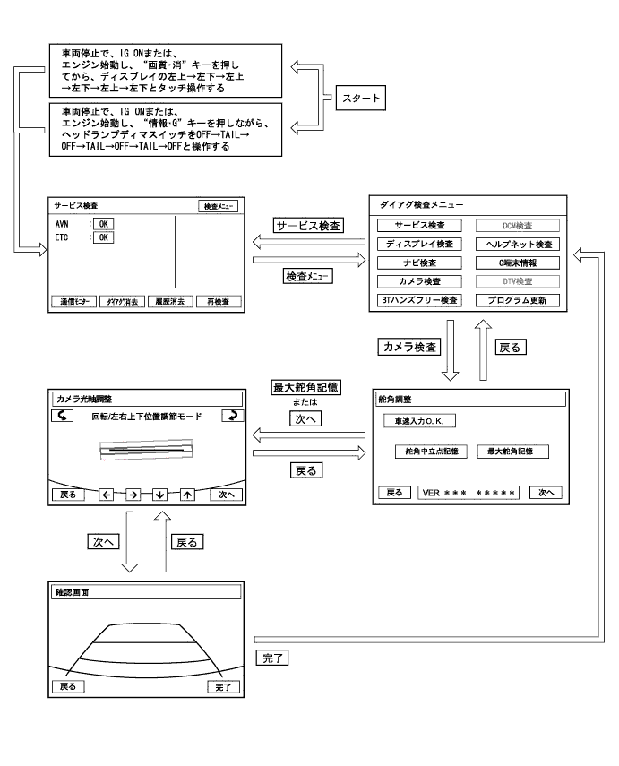
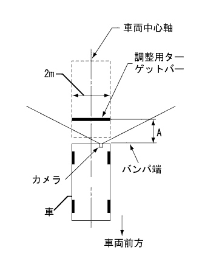
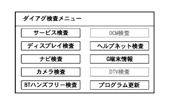
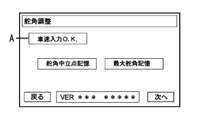
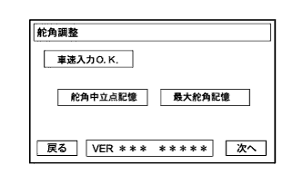
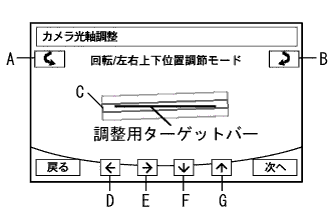
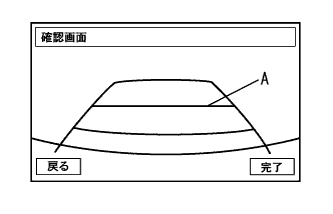

Diagnosis Mode Startup and Cancellation (see )
)
Service Inspection (see)
- □ HINT □
- Inspect the connection condition of each ECU and the DTC output.
Back Guide Monitor System Diagnosis System |
If "Initializing System" is displayed on the screen due to disconnecting the battery terminal (battery terminal removal and installation, steering sensor connector removal and installation), etc., perform one of the following operations to correct the steering angle neutral point deviation.
Method 1... Turn the steering wheel fully to both the left and right to correct the steering angle neutral point.
Method 2... Drive along a route with as few corners, curves and traffic jams as possible for 20km/h or more, for 5 minutes or more. Then stop the vehicle and check whether the neutral point has been learned. If it has not been learned, repeat the procedure.
Display deviation due to causes other than steering angle neutral point deviation
If the steering wheel installation angle is misaligned, the vehicle width extension lines and expected course lines are misaligned when the steering wheel is in the straight-ahead position.
If camera optical axis adjustment has not been performed correctly, the vehicle width extension lines and expected course lines are misaligned.
Diagnosis Mode Startup and Cancellation (see)
Service Inspection (see)

 |
Preparation Before Adjustment
Stop the vehicle with the steering wheel in the straight-ahead position.
Place the adjustment target bars in the positions shown in the illustration.
 |
Diagnosis Startup
Turn the engine ON (engine running).
Start the diagnosis. (see)
Select "Camera Inspection" on the diagnosis inspection menu screen.
 |
Vehicle Speed Signal Input Check
Check the condition of the vehicle speed signal (part A) input to the navigation receiver assembly.
If part A shows "Vehicle Speed Input OK" (displayed in blue), it is normal, so proceed to steering angle adjustment.
If "Checking Vehicle Speed Input" (displayed in red) is shown, perform inspection according to the instructions in List by Symptom [Vehicle Speed Signal Inspection Result Abnormal]. (see)
 |
Steering Angle Adjustment
Check that the vehicle steering wheel is in the straight-ahead position (approximately straight, ±5 degrees or less as a guide), and press "Steering Angle Neutral Point Memory".
After memorizing the steering angle neutral point, turn the steering wheel to the left until it stops, then to the right until it stops, and press "Maximum Steering Angle Memory". The LH/RH maximum steering angles are stored at the moment the button is pressed. (Right may be done first)
 |
Camera Optical Axis Adjustment
Press switch A or B to rotate C so that it is parallel to the adjustment target bar.
Press switches D, E, F and G to move C left, right, up and down so that the adjustment target bar is in the center of the middle of C (red frame).
Select "Next".
 |
Check that A (indicating 1170mm beyond the bumper edge) and the adjustment target bar almost overlap. Also, check that the expected course lines are straight (overlapping the vehicle width extension lines) when the steering is in the straight-ahead position.
Select "Complete" to return to the diagnosis inspection menu.
Diagnosis End
To cancel, turn the IG OFF. Or press the "Picture/Off" key for 3 seconds or more.
Adjustment Check
When maximum steering angle memorization has been performed, check on the screen after ending the diagnosis inspection that the expected course lines move in conjunction with the steering wheel until it is turned fully to the left and right.